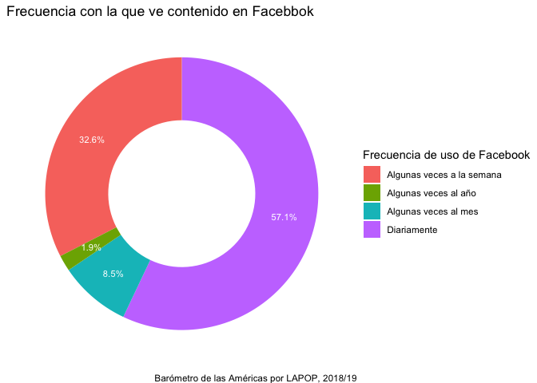

Los votos son contados correctamente
En esta sección se va a usar la variable COUNTFAIR1. Los votos son
contados correcta y justamente. ¿Diría usted que sucede siempre, algunas
veces o nunca? El gráfico 2.5 del reporte el Pulso de la Democracia,
disponible aquí,
presenta los resultados de esta variable por país.
De la misma manera que con las variables nominales, estas variables
tienen que ser declaradas como “factor” en nuevas variables.
library(haven)
lapop21$countfair1r = as.factor(lapop21$countfair1)
Luego, estas variables se tienen que etiquetar y generar las tablas
descriptivas básicas, con el comando table.
levels(lapop21$countfair1r) = c("Siempre", "Algunas veces", "Nunca")
table(lapop21$countfair1r)
##
## Siempre Algunas veces Nunca
## 3477 5235 1698
Para calcular las tablas con porcentajes, redondeados a un decimal,
usamos prop.table y round. Nuevamente, estos
porcentajes no son exactamente iguales a los presentados en el reporte
debido a que estos cálculos no incluyen el factor de expansión.
round(prop.table(table(lapop21$countfair1r)), 3)*100
##
## Siempre Algunas veces Nunca
## 33.4 50.3 16.3
Como se mencionó en la sección anterior, se puede graficar esta
variable usando el comando barplot.
barplot(prop.table(table(lapop21$countfair1r))*100)

Otra opción es elaborar el gráfico de barras usando la librería
ggplot. Una primera opción es trabajar directamente de la
base de datos. Sin embargo, producir una tabla con los resultados desde
la base de datos y usar esa tabla para producir un gráfico es una manera
más intuitiva.
Se puede crear una tabla de frecuencias de esta variable con el
comando table y prop.table. Esta table se
redondea a un decimal con el comando round y se guarda como
un dataframe con el comando as.data.frame en un objeto
“count”. Esta tabla almacena dos columnas, la primera llamada “Var1” con
las etiquetas de la variable y la segunda llamada “Freq” con los
porcentajes.
count = as.data.frame(round(prop.table(table(lapop21$countfair1r)), 3)*100)
count
Podemos usar esta tabla “count” para producir el gráfico de barras
con el comando ggplot. En la especificación
aes se define que los valores de la columna “Var1” se
presenten en el eje X y los valores de la columna a “Freq” en el eje Y.
Se define un gráfico de barras simple, usando el comando
geom_bar(), donde internamente se define el ancho de la
barra. Con la especificación labs se define las etiquetas
de ejes y el “caption”.
ggplot(data=count, aes(x=Var1, y=Freq))+
geom_bar(stat="identity", width=0.5)+
geom_text(aes(label=paste(Freq, "%", sep="")), color="white",
position=position_stack(vjust=0.5), size=3)+
labs(x="Los votos se cuentan justamente", y="Porcentaje",
caption="Barómetro de las Américas por LAPOP, 2021")
El gráfico 2.5 presenta una barra apilada con los datos por cada
país. Primero presentaremos el gráfico de barras apilado usando los
datos de toda la ronda 2021 del Barómetro de las Américas, es decir de
todos los países. Para producir una barra apilada horizontal, se usará
la variable “Freq” ahora en el eje X. Se usará la opción
fill para dividir esta barra por los valores de la variable
“Var1”. Como en el eje Y no se mostrará una variable se define como
"". De la misma manera que se cambiaron las variables en
los ejes, también se cambian las etiquetas en labs. En esta
especificación se cambia la etiqueta de la leyenda con
fill.
ggplot(data=count, aes(fill=Var1, x=Freq, y=""))+
geom_bar(stat="identity", width=0.3)+
geom_text(aes(label=paste(Freq, "%", sep="")), color="white",
position=position_stack(vjust=0.5), size=3)+
labs(x="Porcentaje", y="", fill="Los votos se cuentan justamente",
caption="Barómetro de las Américas por LAPOP, 2021")
Para replicar el gráfico comparativo por país se requiere crear la
tabla de contingencia entre la variable “countfair” y “pais”. Esta tabla
cruzada se guarda en un objeto “count_pais”. Se debe notar que el
dataframe que se crea crea una fila por cada valor de “countfair” en
cada país. De esta manera tenemos 3 opciones x 20 países = 60 filas.
count_pais = as.data.frame(round(prop.table(table(lapop21$pais, lapop21$countfair1r), 1), 3)*100)
count_pais
En esta tabla se calculan los datos por cada valor de la variable
“pais”, incluso cuando no se tiene datos de la variable “countfair”,
debido a que la pregunta no se realizó en ese país. Por este motivo se
tienen que eliminar las filas de los países en los que no se recogió
esta información. Esto se hace con la especificación
[-c(filas),]. Luego se crea un vector con los nombres de
los países. Esta lista se repite 3 veces (15 países restantes x 3
opciones). Este vector se agrega al dataframe en una columna “pais”.
count_pais = count_pais[-c(1:4,18,21:24,38,41:44,58),]
pais = c("Nicaragua","Costa Rica", "Panamá", "Colombia", "Ecuador", "Bolivia", "Perú",
"Paraguay", "Chile", "Uruguay", "Brasil", "Argentina", "Rep. Dom.","Jamaica", "Guyana", "Nicaragua","Costa Rica", "Panamá", "Colombia", "Ecuador", "Bolivia", "Perú",
"Paraguay", "Chile", "Uruguay", "Brasil", "Argentina", "Rep. Dom.","Jamaica", "Guyana","Nicaragua","Costa Rica", "Panamá", "Colombia", "Ecuador", "Bolivia", "Perú",
"Paraguay", "Chile", "Uruguay", "Brasil", "Argentina", "Rep. Dom.","Jamaica", "Guyana")
count_pais$pais = pais
count_pais
Con este dataframe “count_pais” ya tenemos los elementos para
replicar el gráfico de barras apiladas. En la especificación
aes se define que en el eje X se grafiquen los porcentajes,
en el eje Y los países y cada barra se divida por la columna Var2.
ggplot(data=count_pais, aes(x=Freq, y=pais, fill=Var2))+
geom_bar(stat="identity", width=0.3)+
geom_text(aes(label=paste(Freq, "%", sep="")), color="white",
position=position_stack(vjust=0.5), size=2)+
labs(x="Porcentaje", y="País", fill="Los votos se cuentan justamente",
caption="Barómetro de las Américas por LAPOP, 2021")

Frecuencia de uso de redes sociales
En la ronda 2018/19 se evaluó el uso de redes sociales. De esta
manera, se analizaron las variables SMEDIA2. ¿Con qué frecuencia ve
contenido en Facebook?, SMEDIA5.¿Con qué frecuencia ve contenido en
Twitter? y SMEDIA8.¿Con qué frecuencia usa Whatsapp? Estas variables
tienen como opciones de respuesta:
- Diariamente
- Algunas veces a la semana
- Algunas veces al mes
- Algunas veces al año
- Nunca
De la misma manera que con las variables nominales, estas variables
tienen que ser declaradas como “factor” en nuevas variables.
lapop18$smedia2r = as.factor(lapop18$smedia2)
lapop18$smedia5r = as.factor(lapop18$smedia5)
lapop18$smedia8r = as.factor(lapop18$smedia8)
La nota a pie 15 del reporte indica que “los entrevistados que
reportan nunca ver contenido en Facebook y Twitter, y quienes indican
que nunca usan Whatsapp, son considerados como no usuarios de estas
redes sociales” (p. 64). Por este motivo, el gráfico 3.3 de frecuencia
de uso de redes sociales (pag. 57) solo incluyen las categorías
“Diariamente”, “Algunas veces a la semana”, “Algunas veces al mes” y
“Algunas veces al año”. Se excluya la categoría “Nunca”.
En las nuevas variables vamos a declarar el valor 5, correspondiente
a “nunca”, como “NA”, es decir, como valor perdido en R.
library(car)
lapop18$smedia2r = car::recode(lapop18$smedia2r, "5=NA")
lapop18$smedia5r = car::recode(lapop18$smedia5r, "5=NA")
lapop18$smedia8r = car::recode(lapop18$smedia8r, "5=NA")
Luego, estas variables se tienen que etiquetar y generar las tablas
descriptivas básicas, con el comando table.
levels(lapop18$smedia2r) = c("Diariamente", "Algunas veces a la semana",
"Algunas veces al mes", "Algunas veces al año")
levels(lapop18$smedia5r) = c("Diariamente", "Algunas veces a la semana",
"Algunas veces al mes", "Algunas veces al año")
levels(lapop18$smedia8r) = c("Diariamente", "Algunas veces a la semana",
"Algunas veces al mes", "Algunas veces al año")
table(lapop18$smedia2r)
##
## Diariamente Algunas veces a la semana Algunas veces al mes
## 8633 4927 1286
## Algunas veces al año
## 282
table(lapop18$smedia5r)
##
## Diariamente Algunas veces a la semana Algunas veces al mes
## 795 728 422
## Algunas veces al año
## 193
table(lapop18$smedia8r)
##
## Diariamente Algunas veces a la semana Algunas veces al mes
## 14151 2646 495
## Algunas veces al año
## 50
Para calcular las tablas con porcentajes, redondeados a un decimal,
usamos prop.table y round. Nuevamente, estos
porcentajes no son exactamente iguales a los presentados en el reporte
debido a que estos cálculos no incluyen el factor de expansión.
round(prop.table(table(lapop18$smedia2r)), 3)*100
##
## Diariamente Algunas veces a la semana Algunas veces al mes
## 57.1 32.6 8.5
## Algunas veces al año
## 1.9
round(prop.table(table(lapop18$smedia5r)), 3)*100
##
## Diariamente Algunas veces a la semana Algunas veces al mes
## 37.2 34.1 19.7
## Algunas veces al año
## 9.0
round(prop.table(table(lapop18$smedia8r)), 3)*100
##
## Diariamente Algunas veces a la semana Algunas veces al mes
## 81.6 15.3 2.9
## Algunas veces al año
## 0.3
Para presentar todos los datos en una tabla conjunta, se guarda la
tabla de cada red social en un nuevo objeto de R (llamado como cada red
social). Luego, todas estas tablas parciales, que contienen las mismas
opciones de respuesta, se unen como filas con el comando
rbind. Esta nueva tabla conjunta se guarda como un nuevo
dataframe “tabla”.
Facebook = round(prop.table(table(lapop18$smedia2r)), 3)*100
Twitter = round(prop.table(table(lapop18$smedia5r)), 3)*100
Whatsapp = round(prop.table(table(lapop18$smedia8r)), 3)*100
tabla = as.data.frame(rbind(Facebook, Twitter, Whatsapp))
tabla
Para tener una mejor presentación de la tabla, se puede usar el
comando kable del paquete knitr o el comando
formattable del paquete del mismo nombre.
library(knitr)
kable(head(tabla), format="markdown", digits=1)
| Facebook |
57.1 |
32.6 |
8.5 |
1.9 |
| Twitter |
37.2 |
34.1 |
19.7 |
9.0 |
| Whatsapp |
81.6 |
15.3 |
2.9 |
0.3 |
library(formattable)
formattable(tabla)
|
|
Diariamente
|
Algunas veces a la semana
|
Algunas veces al mes
|
Algunas veces al año
|
|
Facebook
|
57.1
|
32.6
|
8.5
|
1.9
|
|
Twitter
|
37.2
|
34.1
|
19.7
|
9.0
|
|
Whatsapp
|
81.6
|
15.3
|
2.9
|
0.3
|
Para graficar esta variable, vamos a trabajar directamente desde la
tabla creada con los porcentajes de las tres redes sociales. Esta tabla
tiene a cada red social en las filas y las opciones de respuesta en las
columnas. Para poder graficar estos datos se requiere que las redes
sociales estén en las columnas y las opciones de respuesta en las filas,
por lo que en primer lugar vamos a transponer esta tabla. Este
procedimiento lo hacemos usando la librería data.table y el
comando transpose. Estos datos transpuestos los guardamos
en una nueva tabla “tabla_tr”.
Este comando transpone los datos, pero deja sin nombrar las filas y
columnas. Primero se nombran las columnas con el comando
colnames usando los nombres de las filas de “tabla”. Luego
se nombran las filas con el comando rownames usando los
nombres de las columnas de “tabla”.
Finalmente, requerimos una columna dentro de “tabla_tr” que incluya
las etiquetas de respuesta de las preguntas de smedia. Estas etiquetas
están como nombres de filas. Para incluirlas como una variable más, se
agrega una variable “tabla_tr$lab” al que se le asigna los nombres de
las filas con row.names.
library(data.table)
tabla_tr = data.frame(t(tabla[]))
colnames(tabla_tr) = rownames(tabla)
rownames(tabla_tr) = colnames(tabla)
tabla_tr$lab = rownames(tabla_tr)
tabla_tr
En segundo lugar, se activa la librería ggplot2 para
graficar los datos guardados en “tabla_tr” con el comando
ggplot. Dentro de este comando se especifica que se
trabajará con el dataframe “tabla_tr” (no con lapop18) y se especifica
la “estética”, es decir que en el eje X no se incluirá una variable, que
en el eje Y se incluirá los datos de “Facebook” del dataframe “tabla_tr”
y que se dividirá por categorías de la variable guardadas en “lab”.
Luego se añade la capa geom_bar para indicar que se
graficará en barras de ancho (width) 1 y que la barra
replicará lo especificado en la estética (stat="identity").
Con geom_text se agrega las etiquetas de los datos, con el
símbolo de porcentaje, y se especifica la posición del texto con
position=position_stack(…) y el tamaño con
size=3. Con coord_polar se transforma las
barras en un gráfico circular de sectores. Finalmente, se define el
“tema” con theme_void indicando un fondo blanco y se
modifica la etiqueta de la leyenda con
scale_fill_discrete.
library(ggplot2)
ggplot(data=tabla_tr, aes(x="", y=Facebook, fill=lab))+
geom_bar(width=1, stat="identity")+
geom_text(aes(label=paste(Facebook, "%", sep="")), color="white",
position=position_stack(vjust=0.5), size=3)+
coord_polar("y", start=0)+
theme_void()+
scale_fill_discrete(name="Frecuencia de uso de Facebook")

En el gráfico 3.3 del reporte “El Pulso de la Democracia” se presenta
un gráfico circular tipo “dona”. Para reproducir exactamente este tipo
de gráfico, se tiene que acomodar unos detalles de la sintaxis anterior.
Se establece “x=2” en la “estética” y se establece límites en el eje X,
entre 0.5 y 2.5, para que cuando se rote el eje, se cree el “hueco”
dentro del círculo.
ggplot(data=tabla_tr, aes(x=2, y=Facebook, fill=lab))+
geom_bar(stat="identity")+
geom_text(aes(label=paste(Facebook, "%", sep="")), color="white",
position=position_stack(vjust=0.5), size=3)+
coord_polar("y")+
theme_void()+
scale_fill_discrete(name="Frecuencia de uso de Facebook")+
labs(title="Frecuencia con la que ve contenido en Facebbok",
caption="Barómetro de las Américas por LAPOP, 2018/19")+
xlim(0.5, 2.5)

Para replicar el gráfico de barras, se hacen algunas modificaciones
en el código anterior. Por ejemplo, en la “estética”, ahora se indica
que en el eje X va la variable “smedia2r” y en el eje Y el porcentaje
“per”. Se elimina, además, la especificación de las coordenadas polares.
Se agrega un título al gráfico, etiquetas a los ejes y un caption con la
especificación labs. Finalmente, se define el eje Y entre 0
y 60 con la especificación coord_cartesian. Un tema
importante es que este gráfico también se puede guardar en un objeto en
R, que llamaremos “graf1”.
graf1 = ggplot(tabla_tr, aes(x=lab, y=Facebook))+
geom_bar(stat="identity", width=0.5)+
geom_text(aes(label=paste(Facebook, "%", sep="")), color="black", vjust=-0.5)+
labs(title="Frecuencia de uso de redes sociales", x="Frecuencia de uso de Facebook", y="Porcentaje", caption="Barómetro de las Américas por LAPOP, 2018/19")+
coord_cartesian(ylim=c(0, 60))
graf1

Guardar un gráfico en un objeto nos permite luego incorporar más
capas o mejoras en el gráfico. El gráfico anterior, por ejemplo, tiene
las etiquetas de “Frecuencia de uso” en una sola línea, por lo se
podrían trasponer. Para mejorar esta visualización se puede inclinar
estas etiquetas, pero si se quisiera mantener la horizontalidad para
facilitar la lectura, lo que se puede hacer es separar las etiquetas
largas en dos o más líneas. Esto se puede hacer, por ejemplo, creando un
vector con las nuevas etiquetas. Las etiquetas largas se pueden partir
en líneas mediante la inclusión de \n entre los textos que
se quiera separar. Luego, al objeto “graf1” se le puede agregar una
nueva capa para reemplazar las etiquetas con las nuevas divididas en
líneas. Esto se hace con la especificación scale_x_discrete
donde se indica que las etiquetas usen el vector creado.
etiq = c("Diariamente", "Algunas veces\na la semana", "Algunas veces\nal mes",
"Algunas veces\nal año")
graf1 +
scale_x_discrete(labels=etiq)

De esta manera el gráfico queda más legible. Hasta aquí se ha
replicado las tablas y gráficos que se usaron con las variables
nominales, ahora usando variables ordinales. Si se quiere replicar el
gráfico circular de las otras redes sociales, se puede ejecutar el mismo
código, pero cambiando la columna de la red social. Para Twitter, por
ejemplo, se tendría.
graf2 = ggplot(data=tabla_tr, aes(x=2, y=Twitter, fill=lab))+
geom_bar(stat="identity")+
geom_text(aes(label=paste(Twitter, "%", sep="")), color="white",
position=position_stack(vjust=0.5), size=3)+
coord_polar("y")+
theme_void()+
scale_fill_discrete(name="Frecuencia de uso de Twitter")+
labs(title="Frecuencia con la que ve contenido en Twitter",
caption="Barómetro de las Américas por LAPOP, 2018/19")+
xlim(0.5, 2.5)
graf2

Cruce de variables
En la tabla 3.1 (pag. 55) del reporte “El pulso de la democracia” se
presenta los porcentajes de uso de las redes sociales por país. Luego,
en la página 56 se presenta un cuadro con el porcentaje de usuarios de
redes sociales por características sociodemográficas, por ejemplo,
urbano/rural, hombre, edad promedio, riqueza promedio y años de
estudio.

Empezaremos replicando los datos generales del uso de redes sociales
que se reporta en el gráfico 3.1. Para replicar esta tabla primero se
tiene que definir la variable “pais” y las variables de uso de redes
sociales (smedia1, smedia4 y smedia7).
lapop18$smedia1r = as.factor(lapop18$smedia1)
lapop18$smedia4r = as.factor(lapop18$smedia4)
lapop18$smedia7r = as.factor(lapop18$smedia7)
levels(lapop18$smedia1r) = c("Sí", "No")
levels(lapop18$smedia4r) = c("Sí", "No")
levels(lapop18$smedia7r) = c("Sí", "No")
lapop18$pais = as.factor(lapop18$pais)
levels(lapop18$pais) = c("México", "Guatemala", "El Salvador", "Honduras",
"Nicaragua","Costa Rica", "Panamá", "Colombia",
"Ecuador", "Bolivia", "Perú", "Paraguay",
"Chile", "Uruguay", "Brasil", "Argentina",
"Rep. Dom.", "Jamaica")
table(lapop18$pais) #País
##
## México Guatemala El Salvador Honduras Nicaragua Costa Rica
## 1580 1596 1511 1560 1547 1501
## Panamá Colombia Ecuador Bolivia Perú Paraguay
## 1559 1663 1533 1682 1521 1515
## Chile Uruguay Brasil Argentina Rep. Dom. Jamaica
## 1638 1581 1498 1528 1516 1513
table(lapop18$smedia1r) #Facebook
##
## Sí No
## 15389 11573
Sin embargo, la variable “usuario” de cada red social se calcula como
condición de dos variables, como se vio en el documento sobre manejo de
datos, con el siguiente código.
lapop18$fb_user = ifelse(lapop18$smedia1==1 & lapop18$smedia2<=4, 1, 0)
lapop18$tw_user = ifelse(lapop18$smedia4==1 & lapop18$smedia5<=4, 1, 0)
lapop18$wa_user = ifelse(lapop18$smedia7==1 & lapop18$smedia8<=4, 1, 0)
lapop18$fb_user = as.factor(lapop18$fb_user)
lapop18$tw_user = as.factor(lapop18$tw_user)
lapop18$wa_user = as.factor(lapop18$wa_user)
levels(lapop18$fb_user) = c("No usuario", "Usuario")
levels(lapop18$tw_user) = c("No usuario", "Usuario")
levels(lapop18$wa_user) = c("No usuario", "Usuario")
Esta variables son graficadas en el reporte en el Gráfico 3.1. Para
reproducir estos datos, se puede describir estas variables.
prop.table(table(lapop18$fb_user))*100
##
## 0 1
## 43.8289 56.1711
prop.table(table(lapop18$tw_user))*100
##
## 0 1
## 92.056769 7.943231
prop.table(table(lapop18$wa_user))*100
##
## 0 1
## 35.76561 64.23439
Como en gráficos anteriores, con estos datos se puede crear un
dataframe que se utilizaría para hacer los gráficos circulares mostrados
en el reporte.
Para replicar el cuadro de uso de redes sociales por país, primero,
se crean las tablas bivariadas con el porcentaje de los que usan y el
porcentaje de los que no usan cada red social en cada país. Estas tablas
se guardan en objetos de R. Luego se unen estos objetos usando los
comandos cbind para juntar las columnas y
as.data.frame para unir las tablas como un dataframe. Esta
tabla presenta también los porcentajes de los que No usan estas redes
sociales. Para presentar una tabla que incluya solo a los que sí usan
las redes sociales, se eliminan estas columnas, usando la especificación
[, c(-1,-3,-5)], que indica que se quiere eliminar las
columnas 1, 3 y 5.Finalmente, se cambia el nombre de las columnas del
dataframe.
fbpais = round(prop.table(table(lapop18$pais, lapop18$fb_user), 1), 3)*100
twpais = round(prop.table(table(lapop18$pais, lapop18$tw_user), 1), 3)*100
whpais = round(prop.table(table(lapop18$pais, lapop18$wa_user), 1), 3)*100
tablapais = as.data.frame(cbind(fbpais, twpais, whpais))
tablapais = tablapais[, c(-1,-3,-5)]
varnames = c("Usa Facebook", "Usa Twitter", "Usa Whatsapp")
colnames(tablapais) = varnames
tablapais
Para tener una mejor presentación de la tabla se tienen dos
alternativas: la primera con la librería knitr y la otra
con la librería formattable.
library(knitr)
kable(head(tablapais), format="markdown", digits=1)
| México |
47.9 |
7.6 |
55.1 |
| Guatemala |
43.2 |
6.5 |
47.6 |
| El Salvador |
56.2 |
6.7 |
56.0 |
| Honduras |
44.6 |
4.8 |
46.9 |
| Nicaragua |
48.1 |
5.8 |
47.7 |
| Costa Rica |
66.6 |
8.0 |
81.6 |
library(formattable)
formattable(tablapais)
|
|
Usa Facebook
|
Usa Twitter
|
Usa Whatsapp
|
|
México
|
47.9
|
7.6
|
55.1
|
|
Guatemala
|
43.2
|
6.5
|
47.6
|
|
El Salvador
|
56.2
|
6.7
|
56.0
|
|
Honduras
|
44.6
|
4.8
|
46.9
|
|
Nicaragua
|
48.1
|
5.8
|
47.7
|
|
Costa Rica
|
66.6
|
8.0
|
81.6
|
|
Panamá
|
34.6
|
5.8
|
56.7
|
|
Colombia
|
60.0
|
10.7
|
63.5
|
|
Ecuador
|
66.9
|
11.2
|
60.2
|
|
Bolivia
|
57.9
|
5.6
|
63.5
|
|
Perú
|
61.4
|
7.6
|
58.6
|
|
Paraguay
|
60.5
|
8.0
|
69.2
|
|
Chile
|
62.9
|
9.2
|
75.5
|
|
Uruguay
|
66.5
|
9.8
|
80.0
|
|
Brasil
|
59.2
|
7.9
|
74.9
|
|
Argentina
|
67.3
|
12.9
|
78.9
|
|
Rep. Dom.
|
61.9
|
9.5
|
68.2
|
|
Jamaica
|
45.9
|
4.5
|
68.1
|
Cruce con variables sociodemográficas
En la página 56 del reporte “El pulso de la democracia” se presenta
los resultados del cruce entre las variables uso de redes sociales y
variables sociodemográficas como urbano/rural, sexo, edad, riqueza y
años de educación.
La variable “q1” registra el género del entrevistado. Esta variable
está codificada de la siguiente manera:
- Hombre
- Mujer
Para construir una variable “dummy” llamada “hombre”, de tal manera
que hombre sea 1 y mujer sea 0, una forma de hacerlo es de manera
algebraica (2-variable q1). De esta manera, ahora los hombres mantiene
el valor 1 (2-1) y las mujeres pasar a ser 0 (2-2). En este caso, la
nueva variable “hombre” se crea como una una variable numérica. Vamos a
mantener a la variable como “num” para, más abajo, poder calcular la
media de esta variable (cosa que no se puede hacer de una variable
declarada como factor).
lapop18$hombre = 2-lapop18$q1
lapop18$hombre = as.factor(lapop18$hombre)
levels(lapop18$hombre) = c("Mujer", "Hombre")
table(lapop18$hombre)
##
## Mujer Hombre
## 14084 13943
La variable urbano/rural se llama “ur” en la base de datos y está
codificada de la siguiente manera:
- Urbano
- Rural
De la misma manera que con género, se usa la fórmula 2- variable ur,
pero esta variable sí se convierte en factor y se etiqueta.
lapop18$urban = 2-lapop18$ur
lapop18$urban = as.factor(lapop18$urban)
levels(lapop18$urban) = c("Rural", "Urbano")
table(lapop18$urban)
##
## Rural Urbano
## 8089 19953
Se presentará las tablas cruzadas del uso de redes sociales por
alguno de las variable sociodemográficas, para entender mejor cómo se
construye la tabla general. Por ejemplo, el reporte muestra en la Tabla
3.2, luego de la columna de población general, las columnas para
usuarios y no usuarios de Whatsapp (variable “wa_user”) y en las filas,
la primera corresponde a urbano (variable “urban”, donde 0 es rural y 1
urbano). Se presenta que entre los usuarios de Whatsapp, el 76.7% son
urbanos y entre los no usuarios, el 62% son urbanos. Estos datos se
generan con el comando table que permite hacer una tabla de
contingencia de 2 variables. En este caso se tiene que notar que cada
variable tiene un título. De esta manera el comando es
table(título1 = var1, título2 = var2). Luego, se usa el
comando prop.table para que no se muestre las
observaciones, sino los porcentajes. Este comando permite calcular los
porcentajes sobre el total (la opción por defecto), sobre las filas y
sobre las columnas. Para calcular sobre las columnas se debe especificar
prop.table(table(...), 2). Si se quisiera el porcentaje
sobre las filas, el código sería prop.table(table(...), 1).
Esta tabla se pueden guardar como un dataframe con el comando
as.data.frame en un nuevo objeto “t1”.
t_wa = as.data.frame(round(prop.table(table(Urbano = lapop18$urban, Usuario = lapop18$wa_user), 2)*100, 1))
t_wa
La filas correspondientes a “Urbano” de esta tabla reproducen los
datos de la Tabla 3.2: 62.1% son urbanos entre los no usuarios de
Whatsapp y 76.7% son urbanos entre los usuarios.
El mismo procedimiento se puede realizar para los usuarios de
Facebook, en este caso cruzado con la variable “hombre”.
t_fb = as.data.frame(round(prop.table(table(Urbano = lapop18$hombre, Usuario = lapop18$fb_user), 2)*100, 1))
t_fb
Estos son los porcentajes para los usuarios de Facebook, en la fila
de la variable Hombre de la Tabla 3.2. Es decir, entre los usuarios de
Facebook, 49.9% son hombres y entre los no usuarios este porcentaje es
49.7%. Hasta aquí se ha reconstruido algunos resultados de la Tabla 3.2.
Los demás datos pueden seguir siendo reconstruidos mediante
combinaciones de las variables de usuarios de redes sociales y las
variables sociodemográficas.
Gráfico de barras de dos variables
El cruce entre usuarios de Whatsapp y la variable urbano se puede ver
también en un gráfico de barras agrupadas. Para esto, usaremos la tabla
“t_wa” que contiene estos datos.
ggplot(data=t_wa, aes(x=Usuario, y=Freq, fill=Urbano, ymax=100))+
geom_bar(position="dodge", stat="identity")+
geom_text(aes(label=paste(Freq, "%", sep="")),
position=position_dodge(width=0.9), vjust=-0.25)+
ylab("Porcentaje")+
xlab("Usuario de Whatsapp")

Si quisiéramos hacer el gráfico con barras apiladas, se tiene que
cambiar la especificación de position="stack" en
geom_bar y la especificación
position=position_stack() de geom_text.
ggplot(data=t_wa, aes(x=Usuario, y=Freq, fill=Urbano, ymax=100))+
geom_bar(position="stack", stat="identity")+
geom_text(aes(label=paste(Freq, "%", sep="")),
position=position_stack(), vjust=2.5)+
ylab("Porcentaje")+
xlab("Usuario de Whatsapp")

En ambos casos las barras celestes indican los porcentajes reportados
en la tabla 3.2 del reporte y corresponden a la proporción de personas
que viven en el ámbito urbano entre los usuarios y los no usuarios.
Cálculos incluyendo el efecto de diseño
Ejemplo con datos de la ronda 2021
Con los datos de la ronda 2021 del Barómetro de las Américas, hemos
calculado los porcentajes de la variable que mide si los votos se han
contado justamente. El gráfico que hemos creado ha sido para el total de
la muestra, es decir, de todos los países. El Gráfico 2.5 del reporte El
Pulso de la Democracia presenta los resultados para cada país.
Si calculáramos los porcentajes con el comando table y
prop.table tendríamos resultados diferentes a los mostrados
en el gráfico. Por ejemplo, en el país 5, que es Nicaragua, los
resultados indican que 26% de ciudadanos de ese país indica que los
votos siempre se cuentan justamente, 49% que algunas veces se cuentan
justamente y 24.4% que nunca. Sin embargo, el gráfico indica que en
Nicaragua, 29% indica que nunca de cuenta justamente, 45% indica que
algunas veces y 25% que siempre. Estos porcentajes no corresponden a los
que se encuentran con estos comandos.
round(prop.table(table(lapop21$pais, lapop21$countfair1r), 1), 3)*100
##
## Siempre Algunas veces Nunca
## 1
## 2
## 3
## 4
## 5 26.2 49.4 24.4
## 6 52.3 40.2 7.5
## 7 27.6 57.1 15.4
## 8 18.1 50.4 31.5
## 9 21.5 59.1 19.4
## 10 24.5 59.2 16.3
## 11 25.1 61.1 13.8
## 12 25.9 48.3 25.8
## 13 64.1 30.1 5.8
## 14 80.0 16.9 3.0
## 15 48.1 35.7 16.1
## 17 31.5 51.0 17.5
## 21 25.2 60.1 14.7
## 22
## 23 17.9 67.9 14.2
## 24 17.0 65.1 17.8
Esta diferencia es debido a que los comandos table y
prop.table no incluyen el efecto de diseño y el factor de
expansión en los cálculos. Más información sobre estas diferencias se
encuentra aquí.
Para replicar los resultados del Gráfico 2.5 hay algunas opciones. La
primera es mediante la librería especializada survey. Para
poder usar esta librería, primero debemos preparar la base de datos,
eliminando los valores perdidos de las variables que definen el diseño.
Un paso adicional es transformar las variables del dataframe. Esto es
debido a que cuando se importan, el sistema lee las variables como tipo
“haven_labelled”, es decir, mantiene las etiquetas de las variables, con
lo que se podría producir un libro de códigos. Esto es útil en otras
ocasiones, pero genera problemas con la librería survey.
Para esto transformamos las variables a otro tipo con el comando
sapply.
lapop21 = subset(lapop21, !is.na(weight1500))
sapply(lapop21, haven::zap_labels)
Una vez preparada la base de datos, se activa la librería y se define
el diseño. En el módulo anterior, también usamos esta librería para
calcular los resultados con el efecto de diseño en la ronda 2018. A
diferencia de ese código, es que la ronda 2021 del Barómetro de las
Américas utilizó la modalidad telefónica, y no cara a cara, por lo que
ahora la unidad primaria de muestreo es el individuo, y así está
definida en la variable “upm”. La variable que define los estratos es
“strata” (y no “estratopri” como en la ronda 2018). La variable de
ponderación sigue siendo “weight1500”.
Con estos datos calculamos guardamos el diseño en un objeto
“diseno21”.
library(survey)
diseno21 = svydesign(ids = ~upm, strata = ~strata, weights = ~weight1500, nest=TRUE, data=lapop21)
La librería survey incluye comandos nativos para hacer
múltiples operaciones que incluyan el efecto de diseño. Uno de esos
comandos es svytable que nos permite hacer la tabla cruzada
entre la variable “countfair1r” y “pais”, especificando el diseño. Este
comando nos devuelve las frecuencias absolutas ponderadas, por lo que se
puede anidar en el comando prop.table para calcular los
porcentajes desde las frecuencias absolutas ponderadas y dentro del
comando count para redondear los porcentajes, y dentro del
comando as.data.table para guardar la tabla en un objeto
“votoxpais” como un dataframe, que nos permita la manipulación con
ggplot luego.
votoxpais = as.data.frame(round(prop.table(svytable(~pais+countfair1r, design=diseno21), 1)*100, 0))
votoxpais$pais = pais
votoxpais
ggplot(data=votoxpais, aes(fill=countfair1r, x=Freq, y=pais))+
geom_bar(stat="identity", width=0.3)+
geom_text(aes(label=paste(Freq, "%", sep="")), color="white",
position=position_stack(vjust=0.5), size=3)+
labs(x="Porcentaje", y="País", fill="Los votos se cuentan justamente",
caption="Barómetro de las Américas por LAPOP, 2021")

Este gráfico reproduce exactamente los resultados mostrados en el
Gráfico 2.5 del reporte, aunque en un orden diferente.
Ejemplo con los datos de la ronda 2018/19
La pequeña diferencia entre los porcentajes que se muestran en el
Gráfico 3.3 y los mostrados en la sección “Describir las variables”
puede deberse a que en todos las tablas y gráficos anteriores no se
incluye el factor de expansión. Si se incluyera, usando la variable
“weight1500”, se replicarían los porcentajes mostrados en el informe.
Por ejemplo, para el uso de Whatsapp, se puede usar el comando
freq de la librería descr que permite incluir
una variable de ponderación.
Esta tabla luego se puede guardar en un dataframe, al que se le
pueden eliminar las filas y columnas que no se requieren, y se les puede
cambiar el nombre a las columnas. y agregar las etiquetas.
tabla2 = as.data.frame(descr::freq(lapop18$smedia8r, lapop18$weight1500, plot=F))
tabla2 = tabla2[-c(5,6), -2]
colnames(tabla2) = c("frec", "per")
tabla2$lab = rownames(tabla2)
tabla2
Con este nuevo dataframe, se puede replicar el gráfico de Whatsapp,
con los datos ponderados, usando el código de ggplot.
ggplot(data=tabla2, aes(x=2, y=per, fill=lab))+
geom_bar(stat="identity")+
geom_text(aes(label=paste(round(per, 1), "%", sep="")), color="white",
position=position_stack(vjust=0.5), size=3)+
coord_polar("y")+
theme_void()+
scale_fill_discrete(name="Frecuencia de uso de Facebook")+
labs(title="Frecuencia con la que ve contenido en Facebook",
caption="Barómetro de las Américas por LAPOP, 2018/19")+
xlim(0.5, 2.5)

Además del comando freq, también se puede usar la
librería survey y el comando nativo
svytable.
library(survey)
diseno18<-svydesign(ids = ~upm, strata = ~estratopri, weights = ~weight1500, nest=TRUE, data=lapop18)
Los resultados que se obtienen son iguales que con el método anterior
y a los presentados en el reporte. Estos resultados también se pueden
guardar en un “dataframe” para hacer el gráfico.
prop.table(svytable(~smedia8r, design=diseno18))*100
## smedia8r
## Diariamente Algunas veces a la semana Algunas veces al mes
## 81.6626475 15.2056787 2.8473540
## Algunas veces al año
## 0.2843197
La sección “Cruce con variables” presenta los datos de usuarios de
redes sociales por país. Para construir la tabla considerando el efecto
de diseño, también se puede usar el comando nativo svytable
que permite calcular una tabla bivariada. De la misma manera que en caso
no ponderado, las tablas parciales de cada red social se guardan en unos
objetos de tipo lista, los que se juntan como un “dataframe” y se edita
para presentar solo los datos de los usuarios de cada red social por
país.
fbpais_2 = round(prop.table(svytable(~pais+fb_user, design=diseno18), 1), 3)*100
twpais_2 = round(prop.table(svytable(~pais+tw_user, design=diseno18), 1), 3)*100
wapais_2 = round(prop.table(svytable(~pais+wa_user, design=diseno18), 1), 3)*100
tablapais_2 = as.data.frame(cbind(fbpais_2, twpais_2, wapais_2))
tablapais_2 = tablapais_2[, c(-1,-3,-5)]
varnames = c("Usa Facebook", "Usa Twitter", "Usa Whatsapp")
colnames(tablapais_2) = varnames
tablapais_2
Por último, la sección “Cruce con variables sociodemográficas”
reproduce los resultados de la Tabla 3.2 del reporte. De la misma manera
que en el caso anterior, se puede usar el comando nativo
svytable para realizar el cruce entre las variables de uso
de redes sociales y la variable urbano. Los resultados de la fila Urbano
en cada red social corresponderían a la primera fila de resultados de la
Tabla 3.2.
round(prop.table(svytable(~urban+wa_user, design=diseno18), 2), 3)*100
## wa_user
## urban No usuario Usuario
## Rural 38.0 23.3
## Urbano 62.0 76.7
round(prop.table(svytable(~urban+fb_user, design=diseno18), 2), 3)*100
## fb_user
## urban No usuario Usuario
## Rural 35.6 23.0
## Urbano 64.4 77.0
round(prop.table(svytable(~urban+tw_user, design=diseno18), 2), 3)*100
## tw_user
## urban 0 1
## Rural 29.7 15.3
## Urbano 70.3 84.7
De esta manera se pueden calcular las tablas de distribución de
frecuencias y las tablas bivariadas (o de contingencia) incluyendo el
efecto de diseño o el factor de expansión.
